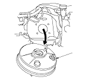

Sostituzione servofreno
Versione con guida a sinistra
Rimuovere la pompa.
Rimuovere la staffa (A) del cablaggio motore.
Scollegare il tubo flessibile della depressione (A) dal servofreno (B).
Rimuovere la spina di bloccaggio (A) e il perno (B) del giunto.
Rimuovere i dadi di fissaggio (C) del servofreno.
Tirare in avanti il servofreno (A).
Durante il rimontaggio non danneggiare le superfici del servofreno e le filettature dei prigionieri.
Non piegare o danneggiare le tubazioni del freno o i tubi flessibili e le tubazioni di altri componenti.
Muovere il servofreno verso l'alto e ruotarlo, quindi rimuovere il vano motore.
Installare il servofreno nell'ordine inverso rispetto alla rimozione facendo attenzione a quanto segue:
Utilizzare sempre una spina di bloccaggio nuova.
Installare la pompa dopo aver installato il servofreno.
Controllare l'altezza e il gioco del pedale del freno dopo l'installazione della pompa e, se necessario, regolarli.
Spurgare l'impianto freni.
